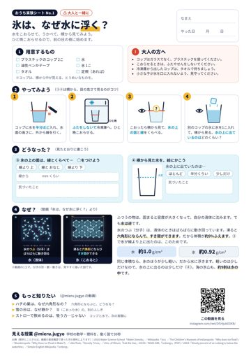

理科・算数の図鑑
動画で「なぜ？」と思ったら、写真や図でもう一度。小学生向けで、図やイラストが多いものが読みやすいです。
リンクは準備中学校の数学・理科を、動く図で30秒。
親子でいっしょに見て、おうちで試してみよう。

こおらせて、うかべて、横から見る。印刷して、気づいたことを書きこめます。
大人と一緒に、プラスチックのコップで。
シリーズごとに、よく見られている順（11月4日時点）。タップするとInstagramで開きます。
コップや水など、台所にあるもので確かめられる回。
算数・数学の「なぜそうなる？」を、図を動かして見る回。
音の高さやひびきを、波の形で見る回。音を出して見てみて。
月、雷、こよみ。空を見上げたくなる回。
#PR このページには広告（アフィリエイト）リンクを含みます
動画のあと「もっと知りたい」となったときに。選び方のめやすです。
動画で「なぜ？」と思ったら、写真や図でもう一度。小学生向けで、図やイラストが多いものが読みやすいです。
リンクは準備中台所でできる実験がまとまったセット。対象年齢と、大人がそばで見守る前提かどうかを確かめて選ぶと安心です。
リンクは準備中部屋の天井に星を映せるもの。「空と宇宙」シリーズのあとに、月や星の話をするきっかけに。
リンクは準備中